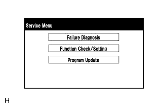

PARKING ASSIST MONITOR SYSTEM > DIAGNOSIS SYSTEM |
| PARKING ASSIST MONITOR DIAGNOSIS SYSTEM |
For parking assist monitor system diagnosis, signals received by the parking assist ECU can be checked and the parking assist monitor system can be calibrated, adjusted and checked using the display and navigation module display.
| DIAGNOSIS SCREEN TRANSITION |
w/o Side Monitor System
During parking assist ECU initialization
After parking assist ECU initialization
w/ Wide View Monitor and Side Monitor System
During parking assist ECU initialization

After parking assist ECU initialization
w/ Multi-terrain Monitor
During parking assist ECU initialization
After parking assist ECU initialization

| DIAGNOSTIC MODE |
Start diagnostic mode.
Failure diagnosis.
 |
System check (check using system check mode screen).
Finish diagnostic mode.
| SIGNAL CHECK (PARKING ASSIST ECU INPUT SIGNAL) |
Start diagnostic mode.
|  |
Select "Function Check/Setting" on the Service Menu screen to display the Function Check/Setting screen.
 |
Select "Camera Setting" on the Function Check/Setting screen.
| Parking Assist ECU Initialization | Screen Transition |
| Not performed | SIGNAL CHECK screen |
| Performed | MODE SETTING screen |
 |
When the screen changes to the MODE SETTING screen, select "BACK CAMERA SETTING" to display the SIGNAL CHECK screen.
 |
SIGNAL CHECK
On the SIGNAL CHECK screen, it is possible to inspect the state of signals sent to the parking assist ECU and check the settings.
| Item | Inspection Detail | Note |
| SPEED | Speed signal input | When "CHK" (red) is displayed, selecting "NEXT" will not change the display to the next screen. |
| CAMERA SW | Steering pad switch assembly (wide view front and side monitor switch) signal input | |
| BCTY | State of CAN communication with main body ECU | |
| MIRROR SW | Outer rear view mirror retract signal input | |
| SHIFT | Shift signal input | |
| STR SIG | Steering angle sensor signal input | |
| HANDLE | Steering wheel position signal input | |
| BODY | Body size signal | |
| DEST | Destination information signal input | |
| BRAND | TOYOTA/LEXUS brand signal | |
| MTM | Multi-terrain monitor signal | |
| WFS SET | Wide view front monitor signal | |
| T/M | Transmission type signal |
SPEED inspection
CAMERA SW inspection
Check that "OK" (blue) is displayed for "CAMERA SW" and select "OK".
Check that "OK" (blue) changes to "CHK" (red). Press the wide view front and side monitor switch (steering pad switch assembly) and check that "CHK" (red) returns to "OK" (blue).
BCTY inspection
MIRROR SW inspection
SHIFT inspection
STR SIG inspection
HANDLE inspection
BODY inspection
DEST inspection
BRAND inspection
MTM inspection
WFS SET inspection
T/M inspection
Finish diagnostic mode.
| CALIBRATION WHEN SERVICING VEHICLE |
| STEERING ANGLE SETTING (AFTER PARKING ASSIST ECU IS INITIALIZED) |
Center the steering wheel and stop the vehicle.
Start diagnostic mode.
Select "Function Check/Setting" on the Service Menu screen.
|
Select "Camera Setting" on the Function Check/Setting screen.
|
Select "STEERING ANGLE SETTING" on the MODE SETTING screen.
|
Select "NEXT" on the SIGNAL CHECK screen to display the STEERING ANGLE SETTING screen.
Steering angle setting
Check that the steering wheel is centered (approximately +/-5 degrees or less) and select "STEERING CENTER MEMORIZE".
After the centered steering position is memorized, turn the steering wheel to the left and then the right full lock positions and select "MAX STEERING ANGLE MEMORIZE" or "OK".
Select "MAX STEERING ANGLE MEMORIZE" or "OK" to store the steering angle adjustment value and change the screen to the MODE SETTING screen.
Finish diagnostic mode.
Confirm steering angle adjustment.
Check on the parking assist screen that the predicted path line moves until the steering wheel is fully turned to either the left or right.